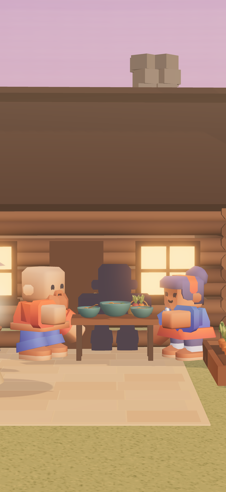

세 개의 문 · 1번 그림자
넌 처음 보는 게 낯설어도 바로 피하지 않고, 실제로 불편한지부터 따지는 사람이야.
강점
처음 가는 곳, 처음 만나는 사람 앞에서 겁부터 먹지 않아. 진짜 문제가 있는지 확인하고 움직이니까, 남들이 낯설어서 망설이다 놓치는 기회를 넌 잡는 편이야.
약점
누가 '불편해' 하면 '멀쩡하잖아'로 넘겨서, 상대가 다음부터 말을 안 하게 돼. 누가 "좀 불편해" 하면 "뭐가 제일 신경 쓰여?" 하고 한 번만 물어봐.
그림자까지 셋이 밥 먹는 장면

세로로 긴 폰 · 1290×2796 9:16 폰 · 1080×1920요즘 폰은 대부분 위의 것이 맞아.
열린 그림을 길게 눌러 저장하면 사진 앱에 담겨.
인스타 앱 안에서 저장이 안 되면 오른쪽 위 ⋯ → 외부 브라우저로 열기.
팔로우하면 DM으로 긴 성격 풀이를 보내줄게.
낯선 곳에서 네가 남들보다 잘하는 것, 그 성격 때문에 친구가 서운해지는 순간, 그럴 때 건넬 말 한마디까지 적어 놨어.
팔로우한 뒤 DM에서 [긴 성격 풀이 보기]를 눌러 줘.
넌 하던 방식이 막히면 멈추지 않고 다른 길부터 찾는 사람이야.
강점
넌 말로 설명하다 안 통하니까 바로 간판 사진을 찍어 보내고 지도 핀을 찍어 줘. 같은 말을 더 크게 하지 않고 전하는 방법을 바꿔서, 계획이 틀어져도 일이 멈추지 않아.
약점
친구가 서운하다고 하면 마음 대신 설명 방법만 바꾸기 쉬워. 누가 서운하다고 하면 설명하기 전에 "내가 그렇게 했을 때 넌 어땠어?" 먼저 물어봐.
넌 뭘 포기해야 할 때, 오늘 쓸 수 있는 걸 남기고 나머지는 빨리 내려놓는 사람이야.
강점
친구들이 갈 곳을 다섯 군데나 꼽으며 지도만 볼 때, 넌 정리해. 시간도 돈도 빠듯할 때 고민하다 다 놓치지 않고 하나를 확실히 챙기고, 정한 뒤엔 오래 후회하지 않아.
약점
당장 쓸모가 안 보이는 걸 너무 빨리 지워서 나중에 아차 해. 오늘 뭔가 지울 때, 딱 하나만 '쓸모는 없지만 다시 보면 웃음 나는 것'으로 남겨 봐.
더 재밌게 고치려고, 이름 없이 누른 버튼·머문 시간만 세. 쓴 글·아이디는 안 보내. 자세히